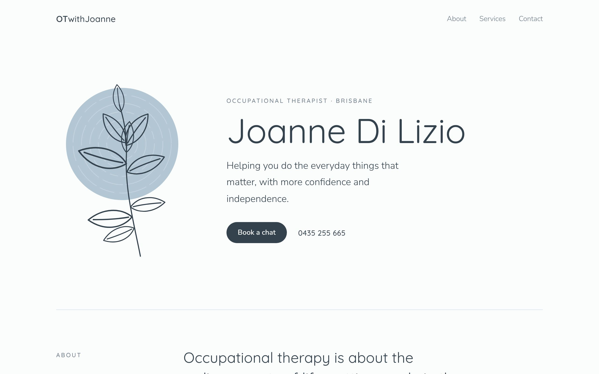
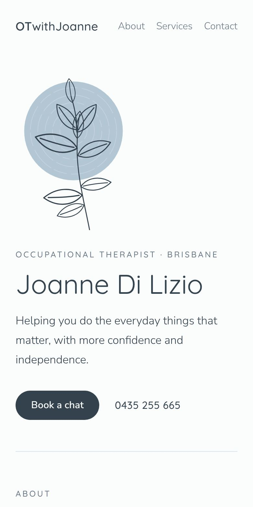
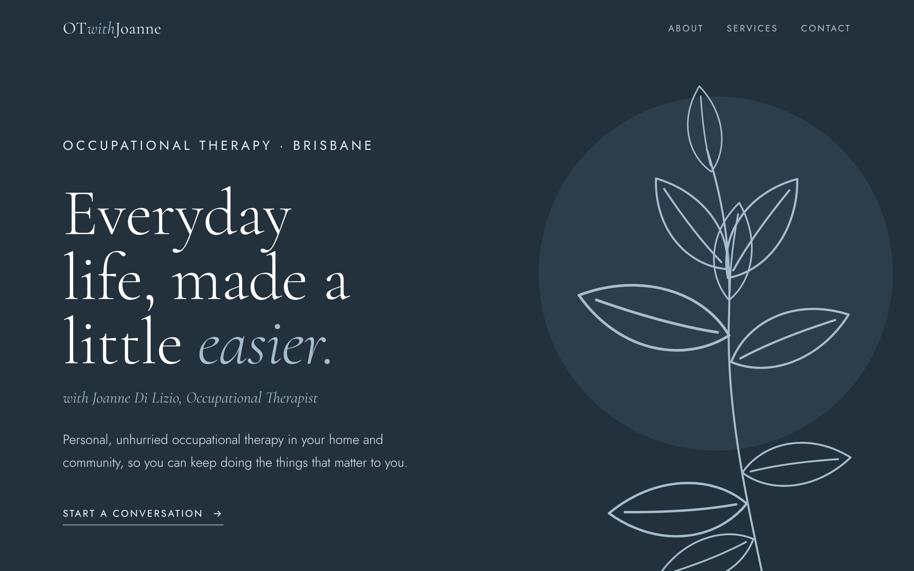
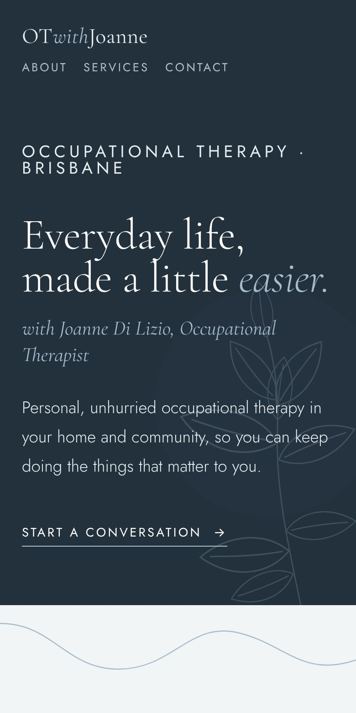
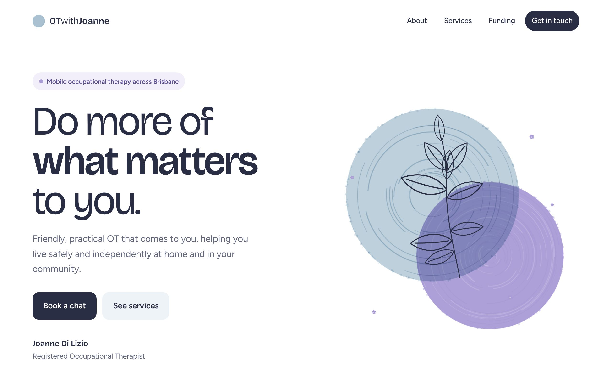
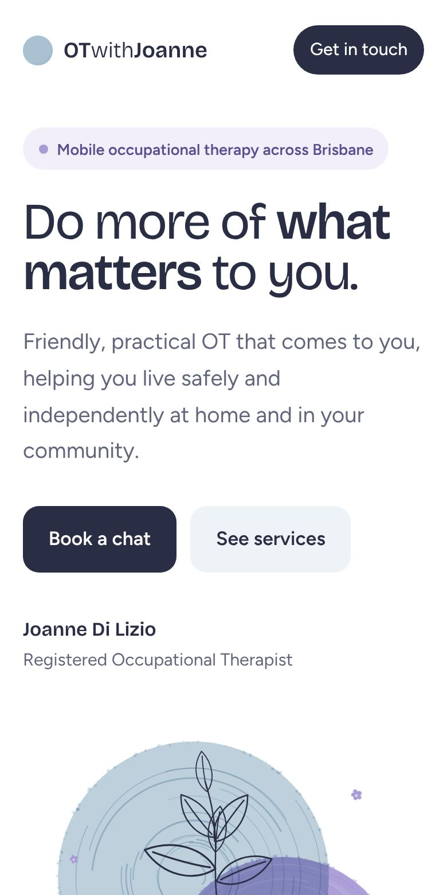

<title>OTwithJoanne Concepts</title>
<meta name="claude:viewport-fit-sides" content="cover">
<link rel="preconnect" href="https://fonts.googleapis.com">
<link rel="preconnect" href="https://fonts.gstatic.com" crossorigin>
<link rel="stylesheet" href="https://fonts.googleapis.com/css2?family=Cormorant+Garamond:ital,wght@0,400;0,500;1,400&family=Figtree:wght@400;500;600&family=Quicksand:wght@400;500&family=Bricolage+Grotesque:opsz,wght@12..96,400&display=swap">
<style>
/* Layout: a calm presentation board. Short intro, then one wide row per concept (screens left, notes right), then next steps. */
:root {
  --bg: #f6f8f9;
  --surface: #ffffff;
  --fg: #26323b;
  --muted: #64737e;
  --line: #dde5ea;
  --accent: #6f8fa5;
  --display: "Cormorant Garamond", Georgia, serif;
  --body: "Figtree", "Segoe UI", system-ui, sans-serif;
}
@media (prefers-color-scheme: dark) {
  :root:not([data-theme="light"]) { --bg: #151c21; --surface: #1d262d; --fg: #e4ebef; --muted: #9aa9b4; --line: #2e3a43; --accent: #a7bfcf; color-scheme: dark; }
}
:root[data-theme="dark"] { --bg: #151c21; --surface: #1d262d; --fg: #e4ebef; --muted: #9aa9b4; --line: #2e3a43; --accent: #a7bfcf; color-scheme: dark; }

* { box-sizing: border-box; }
body { background: var(--bg); color: var(--fg); font: 400 1rem/1.65 var(--body); -webkit-font-smoothing: antialiased; }
.page {
  max-width: 72rem; margin: 0 auto;
  padding-left: max(16px, env(safe-area-inset-left, 0px));
  padding-right: max(16px, env(safe-area-inset-right, 0px));
  padding-block: clamp(2rem, 6vw, 4.5rem) 4rem;
}
a { color: inherit; }
a:focus-visible { outline: 2px solid var(--accent); outline-offset: 3px; border-radius: 6px; }

.intro { display: grid; grid-template-columns: 1.3fr 1fr; gap: 1.5rem 4rem; align-items: end; margin-bottom: clamp(2.5rem, 6vw, 4rem); }
.intro > * { min-width: 0; }
.eyebrow { font-size: .78rem; font-weight: 600; letter-spacing: .16em; text-transform: uppercase; color: var(--accent); margin: 0 0 .9rem; }
h1 { font: 400 clamp(2.4rem, 6vw, 4.2rem)/1.02 var(--display); margin: 0; text-wrap: balance; letter-spacing: -.01em; }
h1 em { color: var(--accent); }
.intro p { margin: 0; color: var(--muted); max-width: 46ch; }

.concepts { display: grid; gap: 1.5rem; }
.concept {
  background: var(--surface); border: 1px solid var(--line); border-radius: 22px;
  display: grid; grid-template-columns: 1.55fr 1fr; overflow: hidden;
}
.concept > * { min-width: 0; }
.shots { position: relative; display: block; padding: clamp(1rem, 2.5vw, 1.75rem); background: var(--swatch-bg); }
.shots .desk { display: block; width: 86%; max-width: 100%; aspect-ratio: 16 / 10; object-fit: cover; object-position: top; border-radius: 10px; box-shadow: 0 10px 30px rgba(20,35,45,.18); }
.shots .phone { position: absolute; right: clamp(1rem, 2.5vw, 1.75rem); bottom: clamp(1rem, 2.5vw, 1.75rem); width: 24%; max-width: 100%; aspect-ratio: 390 / 780; object-fit: cover; object-position: top; border-radius: 14px; border: 4px solid #1b2228; box-shadow: 0 12px 28px rgba(20,35,45,.28); }
.shots:hover .desk { transform: translateY(-2px); }
.shots .desk { transition: transform .25s; }
@media (prefers-reduced-motion: reduce) { .shots .desk { transition: none; } }

.notes { padding: clamp(1.25rem, 3vw, 2.25rem); display: flex; flex-direction: column; gap: 1rem; }
.letter { font-size: .78rem; font-weight: 600; letter-spacing: .16em; text-transform: uppercase; color: var(--muted); }
.notes h2 { margin: 0; font-size: clamp(2rem, 3.6vw, 2.7rem); line-height: 1; font-weight: 400; }
.notes p { margin: 0; color: var(--muted); }
.feel { color: var(--fg) !important; font-size: 1.05rem; }
.specs { display: grid; gap: .6rem; margin: .25rem 0 0; padding: 1rem 0 0; border-top: 1px solid var(--line); }
.specs div { display: grid; grid-template-columns: 5.5rem 1fr; gap: .75rem; align-items: center; font-size: .92rem; }
.specs dt { color: var(--muted); font-size: .8rem; letter-spacing: .06em; text-transform: uppercase; }
.specs dd { margin: 0; min-width: 0; }
.swatches { display: flex; gap: .35rem; }
.swatches span { width: 1.6rem; height: 1.6rem; border-radius: 50%; border: 1px solid var(--line); }
.open { margin-top: auto; align-self: flex-start; display: inline-flex; gap: .5rem; align-items: center; font-weight: 600; text-decoration: none; background: var(--fg); color: var(--bg); padding: .8rem 1.2rem; border-radius: 999px; }
.open:hover { opacity: .9; }

.c-still { --swatch-bg: #e9f0f4; }
.c-still h2 { font-family: "Quicksand", system-ui, sans-serif; }
.c-river { --swatch-bg: #22313c; }
.c-river h2 { font-family: var(--display); }
.c-jac { --swatch-bg: #f2effa; }
.c-jac h2 { font-family: "Bricolage Grotesque", system-ui, sans-serif; letter-spacing: -.02em; }

.after { display: grid; grid-template-columns: repeat(2, minmax(0, 1fr)); gap: 1.5rem; margin-top: clamp(2.5rem, 6vw, 4rem); }
.after section { border-top: 1px solid var(--line); padding-top: 1.25rem; min-width: 0; }
.after h3 { font: 500 1.6rem/1.2 var(--display); margin: 0 0 .75rem; }
.after p { margin: 0 0 .75rem; color: var(--muted); max-width: 60ch; }
.after ul { margin: 0; padding-left: 1.1rem; color: var(--muted); display: grid; gap: .4rem; }
.after li::marker { color: var(--accent); }
.after strong { color: var(--fg); font-weight: 600; }

@media (max-width: 820px) {
  .intro, .concept, .after { grid-template-columns: 1fr; }
}
</style>

<main class="page">
  <header class="intro">
    <div>
      <p class="eyebrow">Website concepts for Joanne Di Lizio</p>
      <h1>Three directions for <em>OTwithJoanne</em></h1>
    </div>
    <p>Each one is a complete one-page site built around the logo on Joanne's business card. Open them on a phone too, since that's how most clients will find her. The text is sample copy for now; the look is what to judge.</p>
  </header>

  <div class="concepts">
    <article class="concept c-still">
      <a class="shots" href="stillwater.html" aria-label="Open the Stillwater concept">
        
        
      </a>
      <div class="notes">
        <span class="letter">Concept A</span>
        <h2>Stillwater</h2>
        <p class="feel">The business card, grown into a website. Airy, quiet and very close to the brand she already has.</p>
        <p>Lots of white space, soft rounded type, and the blue circle used sparingly. The safest choice, and the most consistent with her printed material.</p>
        <dl class="specs">
          <div><dt>Colour</dt><dd class="swatches"><span style="background:#fbfcfc"></span><span style="background:#e9f0f4"></span><span style="background:#b3c6d3"></span><span style="background:#34424d"></span></dd></div>
          <div><dt>Type</dt><dd>Rounded sans, like the card</dd></div>
          <div><dt>Mood</dt><dd>Calm, clinical-light, gentle</dd></div>
        </dl>
        <a class="open" href="stillwater.html">Open Stillwater <span aria-hidden="true">→</span></a>
      </div>
    </article>

    <article class="concept c-river">
      <a class="shots" href="riverbend.html" aria-label="Open the Riverbend concept">
        
        
      </a>
      <div class="notes">
        <span class="letter">Concept B</span>
        <h2>Riverbend</h2>
        <p class="feel">Elegant and editorial. A deep river-blue opening, refined serif headlines, and the leaf drawn large.</p>
        <p>A winding line between sections nods to the Brisbane River. Feels premium and considered, like a boutique practice.</p>
        <dl class="specs">
          <div><dt>Colour</dt><dd class="swatches"><span style="background:#22313c"></span><span style="background:#a7bdcb"></span><span style="background:#f2f5f6"></span><span style="background:#ffffff"></span></dd></div>
          <div><dt>Type</dt><dd>Classic serif with a clean sans</dd></div>
          <div><dt>Mood</dt><dd>Elegant, assured, refined</dd></div>
        </dl>
        <a class="open" href="riverbend.html">Open Riverbend <span aria-hidden="true">→</span></a>
      </div>
    </article>

    <article class="concept c-jac">
      <a class="shots" href="jacaranda.html" aria-label="Open the Jacaranda concept">
        
        
      </a>
      <div class="notes">
        <span class="letter">Concept C</span>
        <h2>Jacaranda</h2>
        <p class="feel">Warm, friendly and modern. The card's blue circle meets Brisbane's jacaranda lilac, with a few drifting blossoms.</p>
        <p>Bolder headlines, soft rounded panels and simple icons. The most approachable of the three, and good for families and NDIS clients.</p>
        <dl class="specs">
          <div><dt>Colour</dt><dd class="swatches"><span style="background:#ffffff"></span><span style="background:#a9c1d1"></span><span style="background:#a99bd6"></span><span style="background:#2a2e44"></span></dd></div>
          <div><dt>Type</dt><dd>Characterful modern sans</dd></div>
          <div><dt>Mood</dt><dd>Warm, upbeat, welcoming</dd></div>
        </dl>
        <a class="open" href="jacaranda.html">Open Jacaranda <span aria-hidden="true">→</span></a>
      </div>
    </article>
  </div>

  <div class="after">
    <section>
      <h3>Mixing is fine</h3>
      <p>These aren't fixed packages. If she likes the Riverbend headline but the Stillwater colours, or the Jacaranda icons on a calmer page, we can combine them.</p>
      <p>All three share the same sections: about, services, how it works, funding and contact, plus an Acknowledgement of Country in the footer.</p>
    </section>
    <section>
      <h3>What we need from Joanne</h3>
      <ul>
        <li><strong>Her real services</strong> and who she mainly works with (adults, children, NDIS, aged care…).</li>
        <li><strong>A few lines about her</strong>: background, experience, what she loves about OT.</li>
        <li><strong>Which funding</strong> she accepts: NDIS, Medicare, private health, DVA.</li>
        <li><strong>A friendly photo</strong> of her, if she'd like one on the site.</li>
        <li><strong>The original logo file</strong> from wherever the card was designed, so the leaf is exact.</li>
      </ul>
    </section>
  </div>
</main>
